Page 1 / 1035
第 14 篇 动物机体的调控
污染物质会影响佛罗里达的短吻鳄鱼的性发育吗
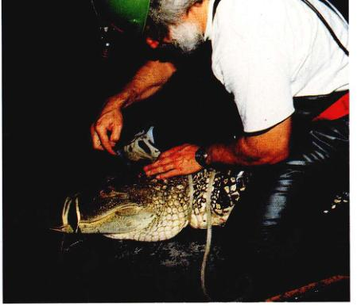
捕捉短吻鳄鱼的工作最好在夜间进行 短吻鳄鱼生活在佛罗里达州的湖泊中，图中研究者盖略特手中就有一只。可能由于佛罗里达州的湖泊中有许多造成内分泌紊乱的化学污染物，致使短吻鳄鱼发育畸形。
短吻鳄鱼是生物学家所研究的最有趣的动物之一。它们的生存状态与环境紧密相关。爬行动物的生物学为包括我们人类自己在内的哺乳动物提供了一个有益的参照。有关短吻鳄鱼发育的研究工作为我们上生动的一课，值得我们高度重视。
相对于其他方面的生物学研究而言，对短吻鳄鱼性发育的研究显得尤为重要，但这并不是因为短吻鳄鱼的性发育十分特殊。与其他所有的脊椎动物一样，雄性短吻鳄鱼的性发育——尤其是外部性器官的发育——在很大程度上取决于雄性激素睾酮及其衍生物。在短吻鳄鱼的胚胎中，这类固醇类激素负责雄性个体内部导管系统的分化，以及外部生殖器的形成。在短吻鳄鱼出生之后，雄激素对于幼体雄性短吻鳄鱼生殖系统的正常发育和成熟是必不可少的，在性发育期尤其如此。
雄性短吻鳄鱼的性发育强烈依赖于雄激素这一点并不特殊，哺乳动物也具有同样的依赖性。那么，研究者为什么会对短吻鳄鱼如此感兴趣呢？总体来说，我们人类不会在水环境中度过我们的一生，但短吻鳄鱼却是这样的样板生活者。佛罗里达的短吻鳄鱼，生活在散布于州内的众多湖泊中。因此，它们的一生都暴露在进入湖里的各种化学物质中。这些化学物质，有的来自化学泄漏，有的来自工业废物，还有的来自农业污染。
由于雄激素决定短吻鳄鱼的性发育，这就为我们提供了一个反映环境污染的敏感指标。因为一系列会造成内分泌紊乱的化学污染物，都能阻碍短吻鳄鱼对雄激素的反应。当佛罗里达的湖泊被这些化学物质所污染时，我们可以通过它们对湖中栖息的短吻鳄鱼性发育的影响来监测污染物的存在。就像煤矿工人的金丝雀死亡，表明了危险气体在煤矿中的积累一样。短吻鳄鱼的异常的性发育，也能显示我们所生活的环境中危险化学物质的存在。
十多年来，佛罗里达大学的 Louis Guillette 研究小组，以及 Gainesville 和他的学生们一直在进行这项研究。他们想弄清农业和其他化学物质对于佛罗里达中部湖泊的污染程度，而他们的评判标准，就是短吻鳄鱼的正常性发育所受到的影响大小。
为了估计那些可能阻碍雄性短吻鳄鱼性发育的激素的变化，Guillette 研究小组测试了每只捕获的短吻鳄鱼体内的雄激素（促进雄性发育）和雌激素（促进雌性发育）的相对比例。有些体内分泌干扰物的功能类似于雌激素，而另一类则会降低雄激素的水平。在这两种情况下，雌激素与雄激素的比值（E/A 比）上升，造成了一个雌激素的内环境，这将减缓雄性的性发育。尤其在性发育期之后，雄性短吻鳄鱼的外部性器官的发育对于一个雄激素水平很高的内环境有很强的依赖性。任何一种能够升高 E/A 比的污染物，都会显著地阻碍这一发育。
Page 2 / 1036
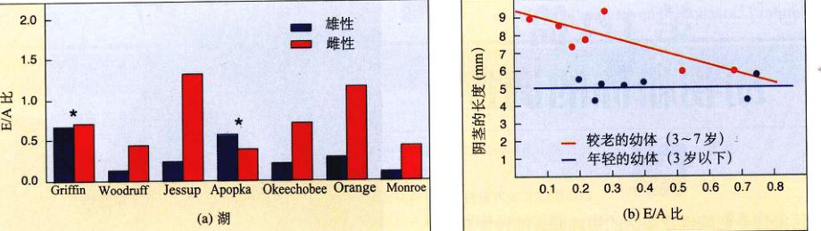
污染抑制短吻鳄鱼的性发育 (a) 3~7 岁的短吻鳄鱼幼体血浆中雌激素与雄激素的比率 (E/A)。雄性中相对高的比率 (*) 是非典型的，表明这是与雄激素环境相反的雌激素环境。(b) 测量阴茎的长度 (E/A 的功能) 得知雄性短吻鳄鱼的性发育水平。对于小于 3 岁的短吻鳄鱼没有明显影响；对于大于 3 岁的短吻鳄鱼则有显著的影响，延迟性发育。
最初是从国家自然保护区 Woodruff 湖和 Apopka 湖中捕获的。Woodruff 湖相对洁净，没有被农业或工业的废物污染。与之相反，Apopka 湖则是一个暴露在各种农业和地方性污染物下的富营养化湖。1980年，这个湖遭受到了一次某化工厂的杀虫剂和酸泄漏污染，并由此含有杀虫剂 DDT。
若对不同湖泊中短吻鳄鱼的生长状况进行精确比较，要求这些动物尽量是在同一时间捕获的。这样可以减少由于光周期、温度和营养可能引起的变化。这一实验条件使实验小组捕获鳄鱼的工作量变得异常巨大。1994年的某一个晚上，他们从 Woodruff 湖中手捕了 40 只雄性鳄鱼。第二天晚上在 Apopka 湖中手捕了 54 只雄性鳄鱼。在再接下来的那一年中，他们在七个湖进行了更大规模的实验，并在 17 天里抓捕了 528 只鳄鱼。
他们测量了所捕获的鳄鱼的身体以及外生殖器的长度。体长很好地表征了短吻鳄鱼的年龄，短吻鳄鱼从 3 岁开始进入性发育期，在进行比较的时候，必须对此进行考虑。
研究人员从每只鳄鱼体内都采集了血样，用来确定血浆中雌激素和雄激素的水平。研究者测试了血浆中 17 β - 雌二醇（雌激素，E）和睾酮（雄激素，T）的浓度，估算 E/A 比值，并以此来确定鳄鱼的内环境是雌激素环境，还是雄激素环境。
结 论
在主要研究的七个湖中，大多数湖中的雌性短吻鳄鱼的 E/A 比率都比雄性短吻鳄鱼的 E/A 比率高得多（上图 a），这是正常的结果。但是 Griffin 湖和 Apopka 湖却出现了反常，它们恰恰是污染程度最大的湖泊。从这两个湖中所捕获的雄性鳄鱼体内的 E/A 高，表明这些动物处于一个雌激素环境，而非正常的雄激素环境。
这种雌激素环境会对鳄鱼的性发育造成影响吗？答案是肯定的。研究者发现，Griffin 湖和 Apopka 湖（在这两个湖中 E/A 升高了）中，已进入性发育期的青年雄性鳄鱼，与 Woodruff 湖和其他湖泊中的鳄鱼相比，其生殖器发育迟缓（上图 b）。
未进入性发育期的雄性短吻鳄鱼却没有出现这种效果，不论 E/A 比多高，它们的外生殖器大小都是一样的。这与我们所预计的是一致的，因为这些器官的生长主要出现在青春期后。这是由睾丸所释放出的雄性激素引起。
在 Apopka 湖中的短吻鳄鱼卵中，p, p'-DDE (p, p'-二氯二苯二氯乙烯) 是一种主要的污染物，它是 DDT (二氯二苯三氯乙烷) 的主要代谢产物之一。现已证实，p, p'-DDE 会与雄激素的受体相结合，并由此在哺乳动物体内扮演了抗雄激素的角色。p, p'-DDE 的存在，削弱了细胞内雄激素的效果，并形成了一个雌激素环境。
研究者还测量了血浆中睾酮的含量。与从 Woodruff 湖中捕获的鳄鱼相比，Apopka 湖短吻鳄鱼的血浆中睾酮含量明显降低。血浆中睾酮含量的降低，同样会导致 E/A 比的下降，并将进一步引起所观测到的繁殖器官的异常。
Page 3 / 1037
第 54 章 神经系统
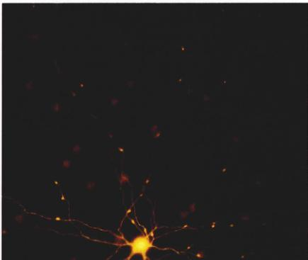
图 54.1 视网膜内的一个神经元 (500×) 这个神经元被注入了荧光染料，细胞体和长轴突很明显。
除了海绵动物以外的所有动物都利用神经细胞组成的网络，来收集有关身体状况和外部环境的信息，综合处理这些信息，并对体内的肌肉和腺体发出命令。在潜水艇中，电话电缆从每一个房间汇集到指挥潜艇的舰长所在的指挥塔。与此类似的是，一束束叫做神经的神经细胞，将动物身体的各个部分的信息汇集到它们的命令和控制中心，即脑和脊髓（图 54.1）。动物机体的运动就像一艘潜水艇一样，有关动物各器官状况和外部环境状况的信息流入指挥中心，指挥中心分析这些信息，并向肌肉和腺体发出命令。
Page 4 / 1038
54.1 神经系统由神经元和支持细胞组成
54.1.1 神经元的结构
动物必须能够对外界环境的刺激做出反应。苍蝇会躲避拍打，小虾的触角可以发现食物，于是小虾朝着食物的方向移动。要完成这些，它们必须具备可以感受这些刺激的感受器，以及能够对这些刺激做出反应的效应器。在无脊椎动物的大部分纲和脊椎动物的各个门中，感受器和效应器都是通过神经系统连接起来的。像在第49章中提到的那样，神经系统由神经元和支持细胞组成。
感觉神经元 (sensory neuron) 或 传入神经元 (afferent neuron) 将神经冲动由感受器传递到中枢神经系统，运动神经元 (motor neuron) 或 传出神经元 (efferent neuron) 将神经冲动从中枢神经系统传递到效应器——肌肉和腺体（图 54.2）。
大多数的无脊椎动物和所有脊椎动物的神经系统中，除了感觉神经元和运动神经元外，还有第三类神经元——中间神经元 (associated neuron or interneuron)。这种神经元位于脊椎动物的脑和脊髓中，一并被称为中枢神经系统 (central nervous system, CNS)。它们帮助产生更复杂的反射和更协调的功能，包括学习和记忆。感觉神经元将神经冲动传入中枢神经系统，运动神经元则负责将神经冲动从中枢神经系统中传出。感觉神经元和运动神经元，共同组成了脊椎动物的外周神经系统 (peripheral nervous system, PNS)。激发骨骼肌收缩的运动神经元，叫做躯体运动神经元 (somatic motor neuron)。而那些调节平滑肌、心肌和腺体活动的运动神经元，则称为自主运动神经元 (autonomic motor neuron)。自主运动神经元还可以进一步分为交感神经 (sympathetic) 系统和副交感神经 (parasympathetic) 系统。二者之间相互制衡（图 54.3）。
大多数的神经元虽然外型各异，但它们的功能结构却非常相似（图 54.4）。细胞体是一个膨大的区域，其中含有细胞核。从细胞体发出一条或多条细胞质的延伸物，称为树突 (dendrite)。运动神经元和中间神经元拥有大量高度分叉的树突，这种结构使得细胞能够同时从多个不同的地点获取信息。
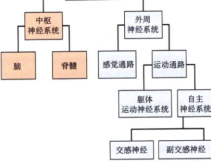
图 54.3 脊椎动物神经系统的分化 主要分为中枢神经系统和外周神经系统。
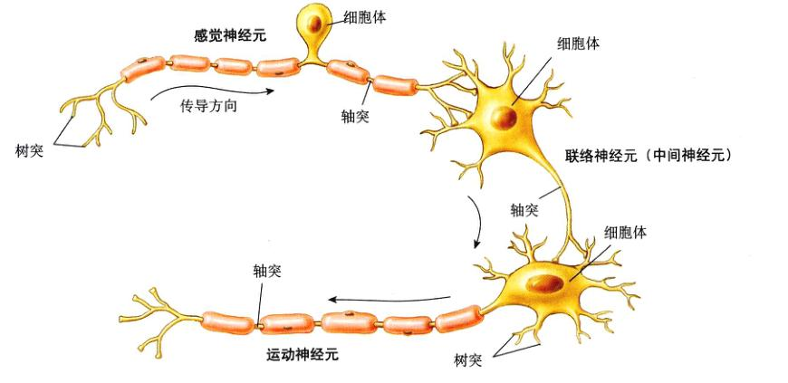
图 54.2 神经元的三种类型 感觉神经元将外界信息传人大脑和脊髓。中间神经元位于大脑和脊髓内，连接感觉神经元和运动神经元。运动神经元将神经冲动或指令传到肌肉和腺体（效应器）。
Page 5 / 1039
有些神经元的树突上还有一些突起，即树突棘 (dendritic spine)，它们增大了接收刺激的面积。细胞体的表面综合来自各个树突的所有信息。如果足以产生兴奋，则引起一个神经冲动沿着轴突传播出去。每1个神经元只发出一条轴突 (axon)，但是一个轴突却可能分叉产生有多个小末端，并刺激多个细胞。一条轴突可以相当长，控制人的足部肌肉的轴突可以长过 1m，而长颈鹿体内从头顶延伸到脊髓的轴突，大约有 3m 长！
支持细胞 (supporting cell) 在结构和功能两方面给予神经元支持。它们被称为神经胶质细胞 (neuroglia)。这些细胞的数量大约是神经元的 10 倍。它们的功能也很多，包括为神经元提供营养物质，从神经元中运走废物，引导轴突的走向，以及执行免疫功能。脊椎动物体内两类最重要的神经胶质细胞是：施旺细胞 (Schwann cell) 和 少突胶质细胞 (oligodendrocyte)，它们形成包裹在轴突和很多神经元外的髓鞘 (myelin sheath)。在外周神经系统中，施旺细胞形成髓鞘；而中枢神经系统中的髓鞘，则是由少突胶质细胞形成的。在发育过程中，这些细胞围着各条轴突，缠绕多次以形成髓鞘。因此，髓鞘是一个由多层细胞膜所组成的绝缘外壳（图 54.5）。被髓鞘所包裹的轴突，称为有髓鞘的轴突；外面没有髓鞘的轴突，则被称为无髓鞘的轴突。在中枢神经系统中，有髓鞘的轴突形成白质 (white matter)，无髓鞘的树突和细胞体形成灰质 (gray matter)。在外周神经系统中，无髓鞘的轴突与有髓鞘的轴突裹在一起并形成神经，其结构很像电缆中的电线。髓鞘每隔 1~2 μm 会出现一个横缢，这就是朗飞氏节 (nodes of Ranvier)（图 54.4）。我们将在本章的后一部分讨论这些髓鞘在神经冲动的传导过程中所起的作用。
神经元和神经胶质细胞，组成了脊椎动物的中枢神经系统和外周神经系统。感觉神经元、运动神经元和中间神经元在神经系统中起着不同的作用。神经胶质细胞对神经元的功能起辅助作用，其中之一即是形成髓鞘。
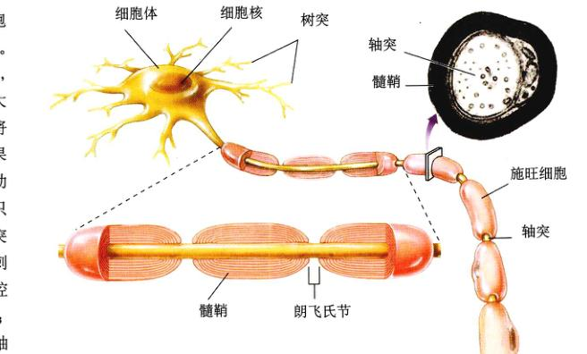
图 54.4 典型神经元的结构 细胞体发出许多树突，接受信息并传给细胞体。细胞体只发出根轴突，传出神经冲动。许多轴突外包髓鞘，这种由多层膜组成的结构可加快神经冲动的传导。髓鞘上有规则地被朗飞氏节中断。在外周神经系统中，髓鞘由施旺细胞组成。
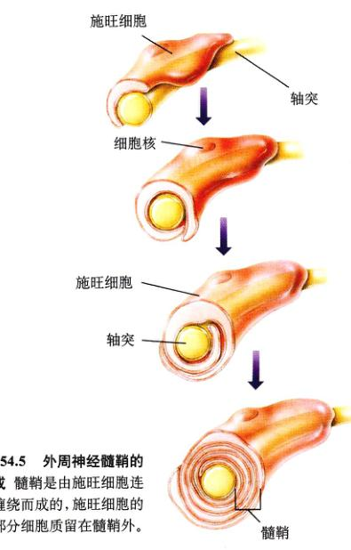
图 54.5 外周神经髓鞘的形成 髓鞘是由施旺细胞连续缠绕而成的，施旺细胞的大部分细胞质留在髓鞘外。
Page 6 / 1040
54.2 神经冲动由轴突的细胞膜产生
54.2.1 静息膜电位
神经元之间是通过细胞间的细胞膜电特性的改变来交换信息的。同时，神经元的结构也有利于这种电信号的传播。而这一电信号就是神经冲动。为了说明这些信号是如何产生和传播的，我们必须先了解一下细胞膜的电特性。
汽车或闪光灯的电池，将正电荷和负电荷分别置于它的两极。这样两极之间就产生了一个电势差 (potential difference)，或者称作电压。电池的一极带正电，而另一极带负电。类似的，每一个细胞的细胞膜的两侧也都存在一个电势差。其中，朝向细胞质的一侧带负电，朝向细胞外液的一侧带正电。这一电势差叫做膜电位。
相对细胞的外侧而言，细胞的内侧带负电。这是由以下三个因素造成的：① 细胞内部带负电的大分子（如蛋白质和核酸）的含量更加丰富，而且这些大分子无法扩散到细胞外部。这些分子被称作固定阴离子 (fixed anion)；② 细胞膜上的钠钾泵每次从细胞里泵出三个钠离子，却只泵入两个钾离子（图 54.6）。这不仅仅导致了跨膜电位的存在，而且还在细胞膜两侧建立起了一个钠离子梯度和一个钾离子梯度；③ 离子通道对钠离子和钾离子的通透性不同。与能够扩散进入细胞的钠离子数相比，能够扩散出细胞的钾离子数更多。多数的离子通道都有“门” (gate)，形成通道蛋白的一部分，能够关闭或打开离子通道的中心。在神经元的轴突和肌肉纤维中，这些“门”的打开和关闭是由跨膜电位控制的。因此，这些离子通道被称作电压门控离子通道 (voltage-gated ion channel)（图 54.7）。
在大多数细胞中，细胞膜对于离子的可通透性是恒定的，细胞内的负电性保持不变。然而，神经元和肌纤维的细胞膜却是可兴奋的。因为它们的离子通道的通透性可因多种刺激而改变。当一个神经元没有受到刺激的时候，它保持着静息膜电位 (a resting membrane potential)。细胞是非常小的，因此它的跨膜电位也是非常小的。一块汽车电池的电压通常是 12 V，然而一个细胞的静息膜电位却大约只有 -70 mV (0.07 V)。负号表示与细胞膜的外侧相比，细胞膜的内侧带负电。
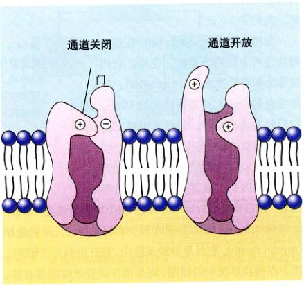
图 54.7 电压门控离子通道 在神经和肌肉细胞中，当细胞膜处于静息状态时，钠离子通道和钾离子通道是关闭的，当去极化达到阈值时开放。
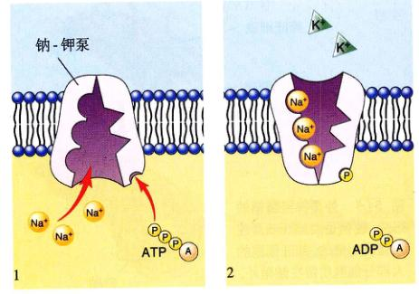
图 54.6 钠 - 钾泵 它将三个钠离子泵到胞外，同时泵入两个钾离子。这种主动运输载体需要分解 ATP。
Page 7 / 1041
我们知道，细胞膜两侧电荷分布的不平衡造成了一个 -70 mV 的静息膜电位。但为什么静息膜电位是 -70 mV 而不是 -50 mV 或 -10 mV 呢？为了弄清这个同题，我们必须知道，那些与静息膜电位的建立有关的离子受到的两种力作用：① 离子会受到与之电性相反的离子或分子的吸引；② 离子会受浓度梯度的影响，并将从高浓度区域流向低浓度区域。
细胞外带正电的离子，即阳离子 (cation)，会被细胞内带负电的固定阴离子所吸引。同时，处于静息状态的细胞膜对钾离子的通透性强于对任何其他阳离子的通透性。因此，钾离子将进入细胞内。虽然其他阳离子也会进入细胞，但是，钾离子的渗透对静息膜电位起着最主要的作用。电势差驱使钾离子进入细胞内；然而，由钠钾泵所建立的钾离子梯度却将驱使钾离子离开细胞。在一个特定的位置上，这两种力彼此平衡，使得进入细胞的钾离子流量与钾离子的流出量相等时的电压，叫做平衡电位 (equilibrium potential)（表 54.1）。对于钾离子来说，平衡电位为 -90mV。当跨膜电位为 -80 mV 时，钾离子将扩散到细胞外，而当跨膜电位为 -100 mV 时，钾离子将扩散进入细胞。
如果这一过程仅涉及钾离子，膜电位就应该是 -90 mV。然而，细胞膜对于钠离子也有一定的通透性。而钠离子的平衡电位却起 +60 mV。由于钠离子渗透进入细胞，细胞的静息膜电位将有所增大。由于静息膜电位大于 -90 mV 时，钾离子将扩散到细胞外，这就使得处于静息状态下的细胞，其细胞膜的平衡电位减少到 -70 mV。利用一个电压计和一对电极，并将一个电极插入细胞膜内，另一个接在细胞膜表面，就可以测量出细胞的静息膜电位（图 54.8）。
当一个神经细胞或一个肌细胞被刺激时，钠离子通道的通透性增强。这时，钠离子就会沿着它的浓度梯度大量地涌入细胞内。这种正电荷的迅猛流动降低了细胞膜内侧的负电性，并使细胞去极化 (depolarize)（朝着与静息电位相反的方向变化）。在极短的一段时间之后，钾离子通道的通透能力也增强，这样钾离子就沿着它的浓度梯度流出细胞。类似地，细胞膜对氯离子的通透能力也会增强，使氯离子流入细胞。但是，氯离子对细胞的跨膜电位的影响远远低于钾离子。这样，细胞膜的内侧又显负电性，并使细胞超极化 (hyperpolarize) 即细胞的跨膜电位低于静息电位。
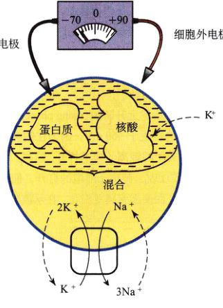
图 54.8 静息膜电位的产生 混合阴离子（主要是蛋白质和核酸）吸引细胞外液中的阳离子。如果细胞膜只对钾离子有通透性，则膜静息电位为 -90 mV。因为细胞膜还允许少量的钠离子进入细胞，所以静息膜电位实际为 -70 mV。这种负载电性不足以阻止钾离子的外流，这个细胞处处于不稳定状态下，需要钠-钾泵来维持。
表 54.1 细胞质和细胞外液 (ECF) 的离子组成
| 离子 |
细胞质中的浓度 (mM) |
ECF 中的浓度 (mM) |
比 值 |
平衡电势 (mV) |
| 钠离子 |
15 |
150 |
10 : 1 |
+60 |
| 钾离子 |
150 |
5 |
1 : 30 |
-90 |
| 氯离子 |
7 |
110 |
15 : 1 |
-70 |
Page 8 / 1042
54.2.2 动作电位
1) 动作电位的产生
如果细胞膜发生轻微的去极化，示波器中的图线将出现小幅度的上移，并迅速回落，回到静息膜电位。由于这一变化的幅度取决于刺激的强度，因此跨膜电位的这一微小变化，叫做分级电位 (graded potential)。分级电位既可以是去极化的，又可以是超极化的。同时，它们的作用还能彼此相互加强或抵消。就像两个相的波在相遇时相互加强，两个反相的波在相遇时相互削弱一样。分级电位的可加性叫做叠加 (54.9)。当到达一个特定程度的去极化时（在哺乳动物的轴突中约为 -55 mV），一个神经冲动或动作电位 (action potential) 就产生了。产生一个动作电位所需的最小去极化程度，被称作阈值 (threshold)。
当去极化程度达到或超过阈值时，钠离子通道和钾离子通道都将打开。但钠离子通道首先打开。迅速涌入细胞内的钠离子，使跨膜电位朝着钠离子的平衡电位变化（+60 mV），并表示示钠离子流入时细胞膜的极性发生反转。当利用示波器记录电位时，这一部分的动作电位表现为峰状图形的上升阶段 (rising phase)（图 54.10）。跨膜电位永远不会接近于 +60 mV，因为在钠离子通道关闭的同时，先前关闭的钾离子通道打开。这样，动作电位的峰值大约为 +30 mV。钾离子通道的打开，使钾离子得以扩散出细胞，从而使细胞膜复极化。在示波器中，复极化的过程表现为这一动作电位的下降阶段 (falling phase)。在大多数情况下，由于钾离子通道保持打开，复极化将跨膜电位在一个短智的时间内小于静息电位，这就形成了一个负尖峰 (undershoot)。动作电位的整个过程仅持续几微秒。
动作电位有两个显著特征：首先，它们是全或无的。在阈值处，电压门控钠离子通道完全打开。因此，每一...
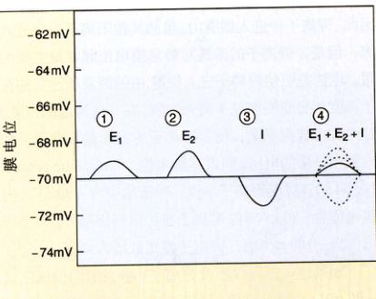
图 54.9 分级电位 ①一个弱的兴奋性刺激 (E₁) 产生的去极化比强刺激 (E₂) 产生的去极化要弱。③一个抑制性刺激 (I) 引起超极化。④因为分级电位可以叠加，如果以上3个刺激几乎同时发生，最后的极性变化是它们3个的代数和。
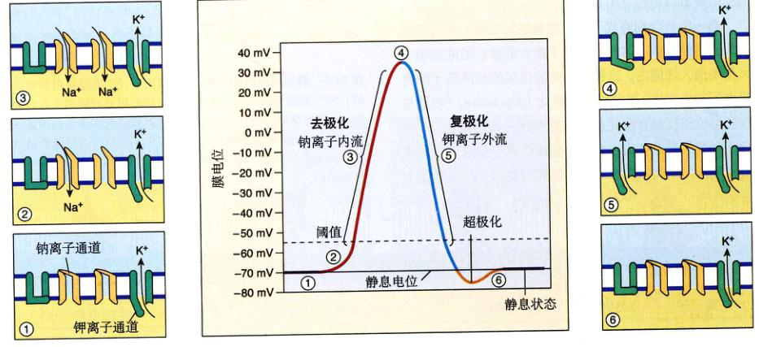
图 54.10 动作电位 ①膜静息电位时，一些钾离子通道是开放的。②一个刺激引起细胞开始去极化，当达到阈值时，动作电位产生。③钠离子通道打开，钠离子扩散进入轴突，快速去极化发生（峰的上升部分）。④到达峰的顶点，钠离子通道关闭，原来关闭的钾离子通道开放。⑤随着钾离子通道的开放，钾离子扩散离开轴突，复极化发生。⑥膜恢复到原来的静息电位之前会发生一个超极化。
Page 9 / 1043
次的去极化，要么形成一个完整的动作电位，要么就不形成动作电位。其次，动作电位总是孤立事件。它们并不能像分级电位那样两两相加或相互影响。因为细胞膜在产生了一个动作电位后，后有一个短暂的不应期。在这段时间内，电压门控钠离子通道无法再次打开。
动作电位的形成完全是由离子的被动扩散。然而，在每个动作电位结束后，细胞内的钠离子含量比静息时略高，钾离子含量比静息时略低。连续不停止工作的钠-钾泵将消除这一改变。这样，虽然动作电位的形成不需要主动运输，但在离子梯度的维持中，主动运输却不可缺少。
2) 动作电位的传播
虽然，我们常说轴突传导动作电位（神经冲动）。但动作电位并非真正沿着轴突传播——它们实际是在轴突膜的不同的点发生的。形成这一现象的原因有两个：① 动作电位是由去极化激发的；② 一个动作电位还可以充当一个引起去极化的刺激。每个动作电位在上升阶段时，由于钠离子迅速扩散进入轴突，都会表现出膜的极性反转 (-70~+30 mV)。这些正电荷将会下一个区域的细胞膜的电位抬升到阈值。这样，接下来的那个区域也表现出自己的动作电位（图 54.11）。同时，刚才发生去极化的细胞膜复极化，并恢复到静息膜电位。这与体育场内人们所造的“人浪”相似：人们在一个固定的地点起立（去极化），举起手臂（动作电位的峰值），然后又坐下（复极化）。
3) 跳跃式传导
动作电位在传导过程中不会衰减（即其幅度不会下降）。这样，轴突末端的最后一个动作电位与第一个动作电位是完全相同的。如果轴突的直径更大，则动作电位的传导将更迅速。如果轴突是有髓鞘的，动作电位的传导速度也会增加（表 54.2）。在有髓鞘的轴突中，由于动作电位只产生于朗飞氏节处，所以其传导神经冲动的速度比无髓鞘的轴突快。一个动作电位仍将充当产生下一个动作电位所需的去极化刺激。但是，一个朗飞氏节处的去极化是在下一个电压门控离子通道被打开前传到下一个朗飞氏节。这样，神经冲动就好像从一个节跳到另一个节（图 54.12）。这一过程就叫做跳跃式传导 (saltatory conduction)。
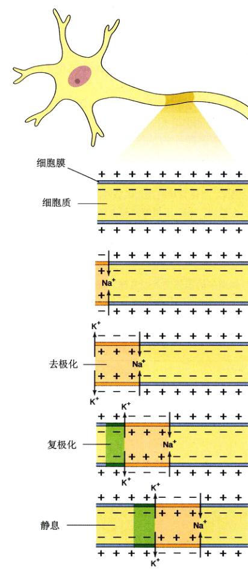
图 54.11 无髓鞘轴突上动作电位的传播 当某处产生于了动作电位，极性翻转，即可作为轴突上相邻部位的去极化刺激。用这种方式，动作电位可传到无髓鞘轴突上的任何一处。
表 54.2 一些轴突的传导速度
| 轴 突 类 型 |
轴突直径 (μm) |
髓 鞘 |
传导速度 (m/s) |
| 乌贼的巨大轴突 |
500 |
无 |
25 |
| 人腿部肌肉的大型运动轴突 |
20 |
有 |
120 |
| 人的皮肤压力感受器中的轴突 |
10 |
有 |
50 |
| 人的皮肤温度感受器中的轴突 |
5 |
有 |
20 |
| 人体内器官的运动轴突 |
1 |
无 |
2 |
Page 10 / 1044
为了更好地理解跳跃式传导是如何加速神经冲动的传导的，请先回忆一下在上一页中，我们为描述动作电位的传导时所提到的“人浪”。在一个由人山人海的体育场中，某个区域的球迷站起来，形成了一个“浪”。相邻区域的人们也随之站起。由于这个“浪”会跳过无人的座位，因此，当体育场的无人区域越多时，“浪”移动的速度也会越快。“浪”不用等待无人区域内的观众起立，而是简单地“跳过”这些空缺，就像跳跃式传导跳过一个个暴露在外的朗飞氏节间无传导功能的有髓鞘部分一样。
54.3 神经元与其他细胞间的连接叫做突触
54.3.1 突触的结构
沿着轴突传导的一个动作电位，最终将达到轴突的末端以及它的全部分支。这些分支，可能会与其他神经元的树突或者肌细胞以及腺细胞形成连接。这些细胞间的连接，就叫做突触 (synapse)。将动作电位传递到突触的神经元，叫做突触前细胞 (presynaptic cell)。而位于突触另一侧的细胞，叫做突触后细胞 (postsynaptic cell)。虽然在光学显微镜下，突触前细胞和突触后细胞似乎是彼此接触的。但是电子显微镜的观察结果则表明，大多数的突触前后的两个细胞间都有一个狭窄的空间，这就是突触间隙 (synaptic cleft)（图 54.13）。
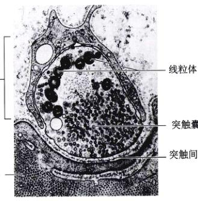
图 54.13 突触间隙 电子显微镜下的一个神经-肌肉间的突触。
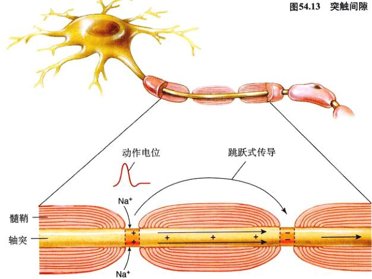
图 54.12 有髓轴突的跳跃式传导 动作电位只产生于有髓轴突的朗飞氏节处。一个朗飞氏节使下一个朗飞氏节去极化，因此动作电位可以跳过朗飞氏节间的间隙。于是有髓轴突的传导速度比无髓轴突快。
Page 11 / 1045
突触前轴突的末端膨大，其中含有大量的突触囊泡 (synaptic vesicle)。每个突触囊泡内都含有被称为神经递质 (neurotransmitter) 的化学物质。当动作电位到达轴突末端时，激发电压门控钙离子通道的打开，引起快速的钙离子内流，激发突触囊泡的外膜与轴突的细胞膜的融合，突触囊泡内的物质就通过胞吐作用释放出去（图 54.14）。当突触前轴突的动作电位的出现频率提高时，就会有更多的突触囊泡将所含的物质释放出去。这些神经递质迅速地扩散到突触间隙的另一侧，并与突触后细胞膜上的受体蛋白 (receptor protein) 相结合。神经递质有很多种类，不同的神经递质起着不同的作用。下面，我们将讨论几种重要的神经递质的作用方式。
54.3.2 神经递质及其功能
乙酰胆碱 (ACh) 是发现最早的神经递质。它在神经系统中的用途十分广泛。现已证明，很多其他的神经递质也起着非常重要的作用。此外，目前的研究还在不断地揭示着有关神经递质的新信息。
1) 乙酰胆碱
乙酰胆碱是穿越运动神经元和肌纤维间的突触的神经递质。这种突触被称为神经肌肉接头 (neuromuscular junction)（图 54.15）。乙酰胆碱与突触后膜上的受体蛋白相结合，并引起突触后膜上离子通道的打开（图 54.16）。由于这些离子通道的“门”是因为乙酰胆碱而打开的，而不是因为细胞膜的去极化而打开的，所以被称为化学门控 (chemically gated) 离子通道。化学门控离子通道的打开，将引起钠离子扩散进入细胞，钾离子扩散离开突触后细胞。虽然这两利离子的移动是同时发生的，但是，钠离子的扩散却要快一些，这在神经冲动的传导中起着先导作用。这样，突触后膜上的相应位置将发生去极化 (图 54.17(a))，这被称为兴奋性突触后电位 (excitatory postsynaptic potential, EPSP)。如果兴奋性突触后电位足够大，那么，负责产生动作电位的电压门控钠离子通道和电压门控钾离子通道也将被打开。由于我们在这里讨论的突触后细胞是骨骼肌细胞，它所形成的动作电位将激发肌肉收缩，我们已在第50章讨论过这一过程的具体机制。
如果乙酰胆碱能引起肌肉收缩，我们也可以从突触间隙中清除它，使我们的肌肉得以放松。这正说明了一条普通的定律：作为神经递质和激素的分子在发挥有效作用的同时，应在分泌后被迅速清除。乙酰胆碱的清除由来白突触后膜上的一种酶：乙酰胆碱酯酶 (acetylcholinesterase, AChE) 完成。这种酶是已知的拥有最快作用的酶之一，可迅速将乙酰胆碱分解成无活性的片段。
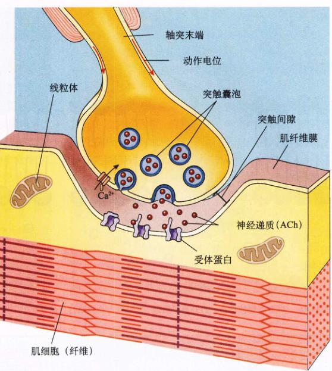
图 54.14 神经递质的释放 神经冲动到达轴突末端引发的钙离子的摄人，导致突触囊泡与细胞膜的融合，释放出其中的神经递质 [此例中是乙酰胆碱 (ACh)]，它扩散通过突触间隙，与突触后膜上的受体结合。

图 54.15 神经 - 肌肉接头 光学显微镜显示轴突的分支分别与许多肌纤维接触。
Page 12 / 1046
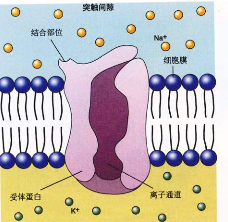
图 54.16 ACh 与受体结合，打开离子通道 当 ACh 与受体结合，这些化学门控离子通道打开。
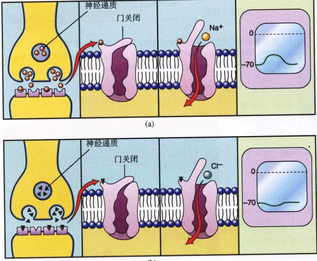
图 54.17 不同的神经递质产生不同的作用 (a) 兴奋性神经递质产生去极化，或兴奋性突触后电位 (EPSP)。(b) 抑制性神经递质产生超极化，或抑制性突触后电位 (IPSP)。
神经毒气和农药由于可以有效地抑制乙酰胆碱酯酶，因此可对人产生痉挛性麻痹，如果呼吸肌被麻痹则引起死亡。
在运动神经元和骨骼肌细胞间，乙酰胆碱扮演着神经递质的角色。其他多神神经元也将乙酰胆碱作为自身与其他神经元形成突触处的神经递质。在这些情况下，突触后膜通常位于另一个神经元的树突或细胞体上。所形成的兴奋性突触后电位，必须穿过树突和细胞体才能到达轴突的开始部分，这里才有最初形成动作电位所需的电压门控离子通道。如果兴奋性突触后电位足够强，越过这个阈值造成的去极化，这个轴突上将形成一个动作电位，而最初的动作电位也恰恰在这个部分形成。
2) 谷氨酸、甘氨酸以及 γ - 氨基丁酸
谷氨酸 (glutamate) 是哺乳动物中枢神经系统中最主要的兴奋性神经递质。它将在突触后神经元中形成兴奋性突触后电位，并激发动作电位的产生。虽然正常含量的谷氨酸将产生生理刺激，但是，谷氨酸过多引起的过度刺激却会导致神经元变性，如舞蹈症。
甘氨酸 (glycine) 和 γ - 氨基丁酸 (gamma aminobutyric acid, GABA) 是抑制性神经递质。如果你还记得，动作电位是由一个超过了阈值的去极化所激发的，那么你就很容易理解为什么细胞膜的超极化会造成抑制。这些神经递质将引起化学门控氯离子通道的打开。氯离子就在其浓度梯度的驱动下流入神经元中。由于氯离子带负电，这一流动将使细胞膜内的负电性增加而处于静息时强，跨膜电位就下降，如从 -70 mV 下降到 -85 mV (图 54.17b)。这一超极化叫做抑制性突触后电位 (inhibitory postsynaptic potential, IPSP)。它对于身体活动的控制和脑的其他一些功能有着十分重要的作用。有趣的是，安定起到镇静作用以及产生其他效果的机制在于，它将巩固 γ - 氨基丁酸与其受体的结合，这样就加强了 γ - 氨基丁酸在突触处起到的作用。
3) 生物胺
生物胺 (biogenic amine) 包括激素（肾上腺素、去甲肾上腺素）以及神经递质（多巴胺、5-羟色胺）。肾上腺素、去甲肾上腺素以及多巴胺是酪氨酸的衍生物，属于邻苯二酚类化合物 (catecholamines)。5-羟色胺则是另外一种氨基酸——色氨酸的衍生物。
(1) 多巴胺 (dopamine)：在脑中是一种非常重要的神经递质，负责控制身体的运动以及其他的一些功能。特定分泌多巴胺的神经元的退化将引起帕金森综合征 (Parkinson's disease)（静止肌内震颤）。患这种病的人服用左旋型的多巴（3,4-二羟基苯丙氨酸），这是多巴胺的前体。此外，研究表明，精神分裂症 (schizophrenia) 则与其他一些区域内的负责释放多巴胺的神经元的过度兴奋有关。因此，神经分裂症患者常常被施以能抑制多巴胺合成的药物。
(2) 去甲肾上腺素 (norepinephrine)：存在于脑和特定的自主神经元中。在那里，它作为神经递质起着补充肾上腺所分泌的激素——肾上腺素的作用。我们将要在本章的后面部分，讨论自主神经系统。
(3) 5-羟色胺 (serotonin)：是一种与睡眠和调节有关的神经递质。同时，它还与多种情绪状态有关。如果释放 5-羟色胺的神经元的活性不足，将会引起抑郁症。这一结论是由下列事实得出的：治疗抑郁症的药物，尤其是氟西汀以及与其有关的成分，特异地阻止 5-羟色胺在突触间隙中的清除（图 54.18）。而另一种药物——麦角酸二乙酰胺，则特异性地阻断脑干中缝核 (raphe nuclei) 中的 5-羟色胺受体。
4) 其他神经递质
在突触处，轴突也会释放多种多肽，这些多肽被称为神经肽 (neuropeptide)。这些神经肽可能具有神经递质的功能，它们也可能对突触后神经元起着微妙而长期的作用。在后面的例子中，它们常被称为神经调质 (neuromodulator) 的作用。一个特定的轴突，通常只分泌一种神经递质。但是，许多轴突职能分泌一种神经递质，又能分泌一种神经调质。
(1) P 物质 (substance P)：是一种很重要的神经肽。它是中枢神经系统中接受疼痛刺激的感觉神经元的突触所释放出来的。然而，对于疼痛的感觉，却可能因为条件的改变而改变；一个受伤的足球运动员在退出比赛之前，可能不会感觉到自己的全部疼痛。人体所感觉到的疼痛的程度取决于两种神经肽的作用——脑啡肽 (enkephalin) 和 内啡肽 (endorphine)。脑啡肽由脑发出的轴突所释放，起着抑制疼痛信息传达到脑的作用。内啡肽由脑干内的神经元所释放，也会减弱人体对疼痛的感觉。鸦片以及它的衍生物——吗啡和海洛因，都具有镇痛作用。因为它们的结构与这两种肽分子十分相似，所以，能够与这两种生物肽的受体结合。因此，脑啡肽和内啡肽被称为内源性麻醉剂 (endogenous opiate)。
(2) 一氧化氮 (nitric oxide, NO)：是发现最早的能在人体内起调节作用的气体。由于一氧化氮是气体，它能够扩散通过细胞膜，因此它无法被储存在突触囊泡中。当需要时，精氨酸就会产生出一氧化氮。一氧化氮的功能与我们所更加熟悉的，有时会被牙医所使用的笑气
Page 14 / 1048
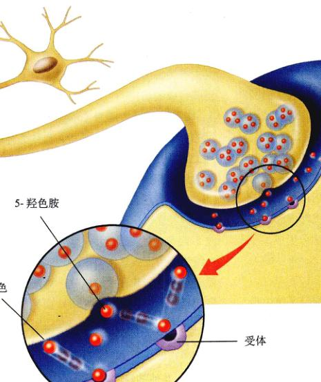
图 54.18 5-羟色胺和抑郁症 神经递质 5-羟色胺的减少造成抑郁症。治疗抑郁症的药物氟西汀阻止 5-羟色胺在突触间隙中的重吸收，弥补 5-羟色胺的不足。
(N₂O) 完全不同。一氧化氮需要穿过细胞膜的磷脂部分就可以扩散离开突触前轴突，并进入邻近的细胞中。在外周神经系统中，一氧化氮由一些支配肠、胃收缩和阴茎、呼吸道以及脑血管的神经元所释放。这些自主神经能引起它所支配的器官的平滑肌舒张。比如，它能够引起阴茎的海绵组织充血而膨大。而药物西地那非 (伟哥) 提高了阴茎中一氧化氮的释放量，从而延长勃起的时间。一氧化氮也是在脑中神经递质，其功能与学习和记忆有关。
5) 突触整合
在脊椎动物的脑和脊髓中，一个突触后神经元的活动，会受到多个突触前神经元的多种类型的输入信号的影响。比如，脊髓中的一个运动神经元，竟然可能与突触前轴突中有对达 5 万个突触的联系！每个突触后神经元上可能既有兴奋性突触，又有抑制性突触。而这些突触所引起的兴奋性突触后电位（去极化）和抑制性突触后电位（超极化），在到达这个神经元的细胞体时将相互影响。较小的兴奋性突触后电位叠加起来，使细胞膜的跨膜电位接近于阈值，而抑制性突触后电位，则会抵消它们所产生的去极化作用，使跨膜电位保持在阈值以下（图 54.19）。这个过程就叫做突触整合 (synaptic integration)。
6) 神经递质和毒品上瘾
当你体内的某个细胞受到了一个时间过长的化学物质所引发的刺激时，这个细胞就会失去原有的对这种刺激产生反应的能力（你应该很熟悉这种敏感性的丧失——当你坐在椅子上的时候，你有多长时间意识到了椅子的存在？）。神经细胞非常易于丧失敏感性。如果突触上的受体蛋白长时间暴露在高浓度的神经递质分子中，这些神经细胞通常将减少细胞膜内的受体蛋白的数量。这一反馈效应是所有神经元正常功能之一，也是在进化过程中产生的提高细胞效率的手段之一。在这个例子里，细胞调整了细胞膜这个“车间”内的“工具”（受体蛋白）的数量，以适应自己的工作。
(1) 可卡因：可卡因 (cocaine) 会造成非正常的、大量的神经递质长时间地留存在突触中。可卡因会影响大脑中与愉悦传递有关的神经细胞（即通常所说的边缘系统）。通过占用大脑边缘系统的常规系统来协调许多活动，尼古丁改变了很多神经递质，包括乙酰胆碱、多巴胺、5-羟色胺等释放进入突触间隙的方式。这样，脑中很多神经通路活动水平都发生了变化。
利用放射性标记的可卡因分子，研究者发现，可卡因会与突触间隙中的转运蛋白紧密结合。在正常状况下，这些蛋白会清除已发挥过作用的多巴胺。就像在“抢板凳”游戏中那样，所有的凳子都被占据了。在这里，所有的转运蛋白也都被占据了。这样，就没有转运蛋白能够将多巴胺清除出去，于是多巴胺就留在突触间隙中，一次又一次地刺激着受体。当一个新的信号到达时，又会产生更多的多巴胺。这样，愉悦感的形成就会越来越频繁 (图 54.20)。
Page 15 / 1049
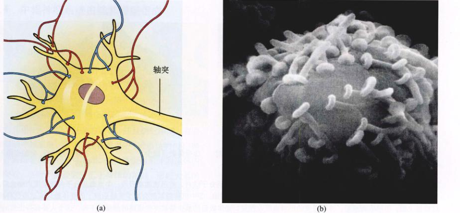
图 54.19 神经元细胞体上 EPSP 和 IPSP 的整合 (a) 有些轴突的突触是兴奋性的（蓝色）；其他是抑制性的（红色）。这些传人信号的总和决定突触后细胞膜的去极化是否能有效地引起动作电位。(b) 有多个突触的一个神经细胞体的显微图 (15 000×)。
当边缘系统中的神经细胞膜上受体蛋白长期暴露于高浓度的多巴胺分子中时，这些神经细胞就会通过减少它表面的受体蛋白分子的数量来“减小音量”。面对数目众多的神经递质分子，它们只是简单地减少了识别这些分子的“目击者”。这样，可卡因的使用者就上瘾了 (图 54.21)。由于细胞表面的受体过少，使用者甚至要依靠这种毒品来维持边缘系统的正常活动。
(2) 尼古丁会使人上瘾吗？ 研究者们尝试着弄清尼古丁使人上瘾的实质。在研究可卡因的过程中，所采用的似乎是一个很可行的方法——使核素示踪标记的尼古丁分子进入脑中，并观察它所依附的运载蛋白的种类。令研究者们吃惊的是，尼古丁并不与突触间隙中的蛋白结合，而是直接与突触后细胞上的一种特殊的受体相结合！这使研究者们完全没有预料到的。因为尼古丁通常并不会在脑中出现，为什么那里竞然会有它的受体呢？
随后研究者们进行了更加细致的研究，并很快发现，在通常状况下“尼古丁受体”是与神经递质乙酰胆碱相结合的一大类受体。当然，也有一些乙酰胆碱的受体不会对尼古丁做出反应。尼古丁，烟草中的一种化学物质，能与这些受体结合完全是一个偶然。那么，这些受体的正常功能是什么呢？研究表明，这些受体实际上是脑的最重要的工具之一。脑用它们来协调其他多种受体的活动，使它们相互协调，共同完成对多种行为的感知。
当神经生物学家将吸烟者的脑与不吸烟者的脑进行比较时，他们发现，不仅尼古丁的受体的数量发生了改变，而且用于产生这些受体的 RNA 的水平也下降了。他
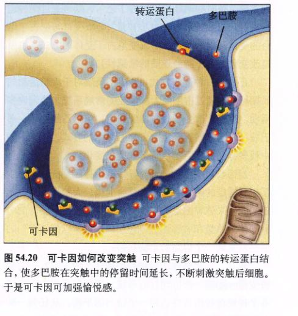
图 54.20 可卡因如何改变突触 可卡因与多巴胺的转运蛋白结合，使多巴胺在突触中的停留时间延长，不断刺激突触后细胞。于是可卡因可加强愉悦感。
Page 16 / 1050
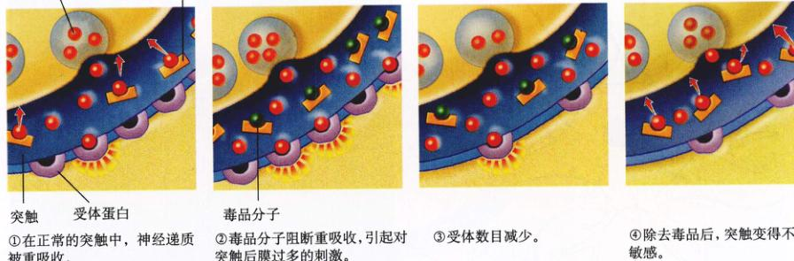
图 54.21 毒瘾 ①在正常的突触中，神经递质发挥作用后与转运分子结合，被迅速地重吸收。②毒品分子与转运蛋白结合后，重吸收被阻断，留在突触中的神经递质增加，过多地刺激激突触后细胞。③中枢神经系统会减少突触后膜上的受体数目来适应这种增加，这就是上瘾。④除去毒品后，神经递质不能重吸收恢复，受体数目的减少造成神经通路的感受性下降。这个人要保持正常的生理功能，必须继续使用毒品。只有这种毒品被永久性去除，神经系统才能最终恢复原来的受体数量。
们发现，长时间地暴露于尼古丁之下，脑可通过两种途径来进行自我调节以“减小音量”：①减少可与尼古丁结合的受体蛋白的数量；②改变尼古丁受体的方式（也就是改变它们对于神经递质的敏感性）。
正是第二种调节方式，造成了吸烟对于大脑活动的长期影响。通过占用大脑操控的常规系统来协调许多活动，尼古丁改变了很多神经递质，包括乙酰胆碱、多巴胺、5-羟色胺等释放进入突触间隙的方式。这样，脑中很多神经通路活动水平都发生了变化。
当因长期使用尼古丁而导致整个神经系统对其产生了生理适应的时候，使用者就会上瘾。大脑还要产生其他的改变来弥补因尼古丁所造成的许多改变。脑内的多种受体的数量和敏感性都会被加以调整，以便使它们的活性恢复到一个恰当的平衡状态。
现在，如果你停止吸烟会出现什么情况呢？一切都将变得一团糟！新协调好的系统，需要利用尼古丁来使各个神经途径的活性达到一个恰当的平衡点。从任何一种角度来说，这都是上瘾。人体的生理反应是长期的，也是无法避免的。一个人无法通过自身的意志力来阻止自己对尼古丁的依赖，就像在用上膛的枪玩俄罗斯转盘时不可以用意志力来阻止子弹一样。如果长期抽烟，就会上瘾。
如果吸烟上瘾又想戒掉，该怎么办呢？当停止使用一种使人上瘾的药物，如尼古丁时，人体内的信号水平将大大偏离正常水平。如果确实不再使用这种药物，改变了的信号水平又将使神经细胞产生补偿性的改变，以使脑内的各种活动恢复到一个恰当的平衡状态。一段时间以后，受体数量增加，它们的敏感性以及神经递质的释放模式都会恢复到正常状况，并重新开始在各种途径中产生正常水平的信号。有办法阻止的烟瘾逐渐上升。只有受到影响的神经细胞上的受体的数量重新恢复后，愉悦感的产生途径才能够恢复正常的水乎工作。
很多人试图通过使用含有尼古丁的药膏来戒烟，这就在说，逐渐减少尼古丁的用量能够逐渐削弱吸烟者对于香烟的欲望！实际上，使用这些药膏，它们也不会减少对香烟的欲望！实际上，使用这些药膏仅仅是用另一种获取尼古丁的途径取代了通过吸烟（一种公认更安全的途径）来获得尼古丁。如果想要用药膏来戒烟，就无法回避只这是减少尼古丁用量的事实。虽然这个坏消息很中不听，但是，确实没有别的更好的办法。要想戒烟就必须彻底戒掉尼古丁。
54.4 中枢神经系统由脑和脊髓组成
54.4.1 脊椎动物脑的进化
海绵动物是多细胞动物中惟一门没有神经的动物。最简单的神经系统出现于腔肠动物门的水螅中（图 54.22）。在这个神经系统中，所有的神经元都非常相似，彼此相连，形成一个网状系统即神经网 (nerve net)。这个神经系统没...
Page 17 / 1051
有联合作用，无法控制复杂的运动，并且缺乏协调。有联合作用的神经系统，最早出现在涡虫中（扁形动物门）。两条神经索沿着涡虫的身体分布，外周神经则延伸到达体内的肌肉处。这两个神经索交汇于身体的前端，形成大量的神经组织。在这些组织中也有中间神经元，它们之间通过突触彼此相连。这个原始的“脑”，就是最初的中枢神经系统。与水螅的神经系统相比，它已能对肌肉反应进行更加复杂的控制。
神经系统随后产生的所有进化和变化，都可以看成是对涡虫的神经系统已有的结构的一系列细化和改善。例如，蚯蚓的中枢神经系统通过外周神经与身体的各个部分相连。又如，在节肢动物的神经系统中，对于复杂的反射的中枢调节越来越集中于身体前端的神经索中。随着这个区域的进化，其中的中间神经元的数量持续不断地增加，并最终形成神经束。这些神经束，就是脑内的联合通路。
原口纲动物（生活在5亿年前的鱼类）化石的颅内切片，为我们提供了很多有关脊椎动物的脑进化的最初阶段的信息。虽然这些脑还很小，但它们已经具有现代脊椎动物的脑的一大特征——脑分成了三个区域：① 后脑，又称菱脑；② 中脑；③ 前脑（图 54.23）。
后脑是早期的脑的主要部分。这一现象仍然存在于...
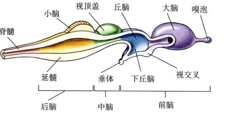
图 54.23 原始鱼类的脑中已可见脊椎动物脑的基本结构 所有的脊椎动物的脑可分为三个基本区域：后脑，鱼脑的最大部分，中脑，鱼主要用来处理视觉信息；前脑，主要与鱼的味觉有关。陆生脊椎动物的前脑在处理视觉信息时比鱼的前脑起的作用更大。
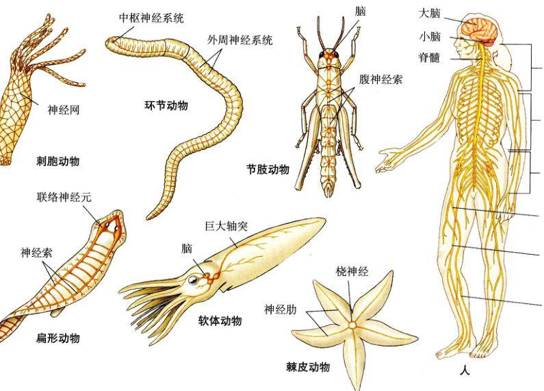
图 54.22 神经系统的进化 动物呈现神经索逐步建立和复杂的反应不断地集中到神经索前端的趋势。
Page 18 / 1052
现代鱼类的脑中。后脑由小脑 (cerebellum)、脑桥 (pons) 以及延髓 (medulla oblongata) 三部分组成，可以被视为是脊髓的延伸，主要负责协调运动反射。神经束中含有大量的轴突，就像电缆一样，自下而上从脊髓连到后脑。后脑转而对从肌肉送回的大量感觉信号进行整合，并协调运动反射的方式。
大多数的协调活动都发生在后脑延伸出的一个很小的区域内。这个区域就是小脑。在更加高等的脊椎动物中，小脑在作为运动的协调中心方面起着更重要的作用，其体积也较鱼的小脑显著增加。在所有的脊椎动物中，小脑处理有关所处位置以及与肢体活动相关的所有数据。这些数据包括肌肉是处于舒张状态还是收缩状态、身体的总体位置以及它与外部环境之间的关系。这些数据都汇集到小脑中，经过综合处理后，小脑向传出通路发出命令。
在鱼类中，脑的其他部分负责接收和处理感觉信息。中脑主要由视叶 (optic lobe) 组成。它们负责接收、处理视觉信息，而前脑则处理有关嗅觉 (olfactory) 的信息。在鱼类的一生中，脑一直在生长。这与其他纲的脊椎动物的脑形成了鲜明的对比。这与其他纲的脊椎动物的脑形成了鲜明的对比（图 54.24）。人脑的发育将延长至幼年期早期。但是，当发育停止之后，就不会再产生新的神经元。脑中的海马体是惟一的例外。它们决定着哪些经历将被存入长期的记忆，哪些经历将被遗忘。
1) 起主导作用的前脑
从两栖动物开始，对于感觉信息的处理越来越集中于前脑。在爬行动物中，这一趋势则更加明显。这种模式在进化中成为了脊椎动物脑发育方式的主要趋势 (图 54.25)。
爬行动物、两栖动物、鸟类以及哺乳动物的脑都是由两个功能迥异的部分组成，即间脑和端脑。间脑 (diencephalon) 由丘脑和下丘脑组成。丘脑 (thalamus) 是从身体各部分传来的感觉信息和大脑之间信息的整合中心和接力站。下丘脑 (hypothalamus) 参与调节基本的生理需要和情绪，同时，也控制垂体的分泌。端脑 (telencephalon) 位于脑的前部，主要负责联络活动。在哺乳动物中，端脑又被称为大脑 (cerebrum)。
2) 大脑的扩展
科学家研究了脊椎动物的脑的质量与身体质量之间的关系（图 54.26）。一方面，鱼类和爬行动物之间存在显著的差异；另一方面，鸟类和哺乳动物之间也存在显著的差异。哺乳动物的质量相对身体来说特别大，这一点在海豚和人的身上体现得尤为突出，人的脑大约重达 1.4 kg。哺乳动物的脑大小的增长，很大程度上是指大脑的显著增长。大脑是哺乳动物脑中最重要的部分。它是联系以及学习的中枢。它从丘脑接收感觉信息，通过轴突中的下行束向脊髓发出运动指令。
在脊椎动物中，中枢神经系统由脑和脊髓组成（表 54.3）。两个结构主要由中间神经元和神经胶质细胞构成。它们负责处理神经系统中的大部分信息。上行束将感觉信息向上传送到脑。下行束将脑所发出的神经冲动传送到脊髓中的运动神经元和中间神经元，通过它们控制整个身体的肌肉运动。
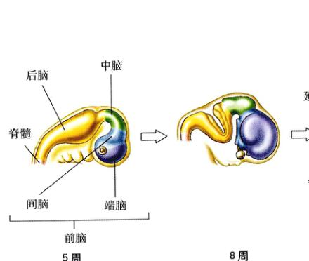
图 54.24 人脑的发育 脑的主要部分在胎儿期形成。
Page 19 / 1053
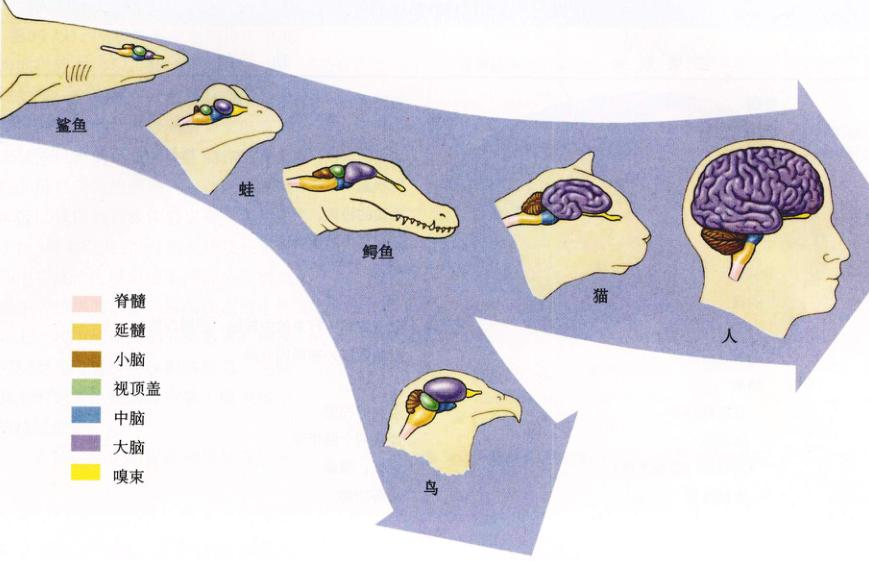
图 54.25 脊椎动物脑不同部位相对位置的进化 在鲨鱼和其他鱼类，后脑起支配作用，脑的其他部分主要是处理感觉信息。两栖类和爬行类的前脑很大，包含增大的大脑，处理协同动作。起源于爬行类的鸟类，大脑更加显著。哺乳动物的大脑覆盖视顶盖，是脑中最大的部分。人类的大脑几乎覆盖了脑的其余部分，起决定性作用。
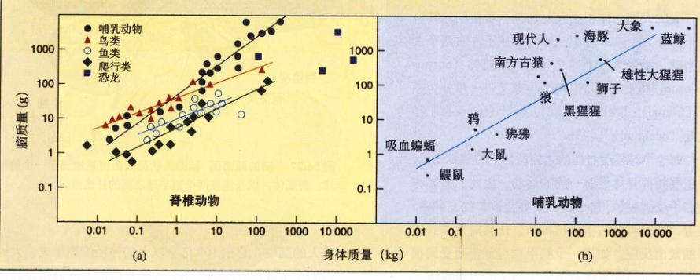
图 54.26 脑与身体的质量比 大多数脊椎动物脑占身体质量的比例是恒定的，因此脑与身体质量比的图显示一条直线。(a) 鸟类的脑与身体质量比大于爬行类的脑与身体质量比，这种比值哺乳类很高。(b) 哺乳动物中，人类每单位身体质量对应的脑质量最大 (即离图中直线的垂直距离最远)，其次是海豚。
Page 20 / 1054
表 54.3 中枢神经系统的分区
| 主 要 划 分 |
功 能 |
| 脊髓 |
脊髓反射；中转感觉信息 |
| 后脑 (菱脑) |
|
| 延髓 |
感觉细胞核；网状激活系统；控制内脏 |
| 桥脑 |
网状激活系统；控制内脏 |
| 小脑 |
运动的协调；平衡 |
| 中脑 |
眼和耳中的反射 |
| 前脑 |
|
| 间脑 |
|
| 丘脑 |
上行束和下行束的中转站；控制内脏 |
| 下丘脑 |
控制内脏，神经内分泌 |
| 端脑 |
|
| 基底神经节 |
运动的控制 |
| 胼胝体 |
连接两个脑半球 |
| 海马体 (边缘系统) |
记忆，情绪 |
| 大脑皮层 |
高等功能 |
54.4.2 人的前脑
人的大脑的体积很大，它甚至覆盖脑的其余各个部分（图 54.27）。它从中间裂成了左右两个大脑半球。两个大脑半球之间通过胼胝体 (corpus callosum) 彼此相连。这两个半球又进一步分为额叶 (frontal)、顶叶 (parietal)、颞叶 (temporal) 和枕叶 (occipital)。
每个半球接受身体的对侧所传来的感觉信息，并主要指挥身体相对一侧的运动。因此，假如你的右手受到碰触，这个信息主要会被传到左脑中，接着，左脑将向右手发出指示，让你对所受到的碰触做出反应。如果一个脑半球因猛击而受到损伤，通常将引起身体对侧丧失感觉能力和瘫痪。
1) 大脑皮质
大脑中大多数的神经活动都发生在其外表面厚度仅有几微米的表层，即灰质中。这个表层被称力大脑皮质 (cerebral cortex)，它由排列十分紧密的神经细胞组成。
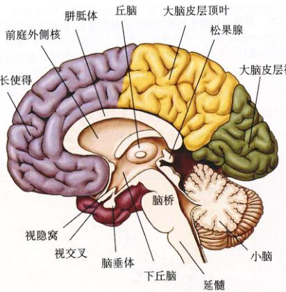
图 54.27 脑的截面图 脑的矢状截面图清晰地显示一个半球、胼胝体，以及连接两个脑半球之间的纤维束。
在人的脑中，它由 100 亿个以上的神经细胞组成，大约占脑中全部神经元的 10%。大脑皮层的表面通常是高度褶皱的，人的脑尤其如此。这些褶皱使皮层的表面积足足扩大了 3 倍。
大脑皮层的活动有以下三类：运动、感觉以及联络。初级运动皮层位于额叶前部边界处的脑回 (gyrus) 中，在中央沟 (sulcus) 的正前方（图 54.28）。这个区域的每
Page 21 / 1055
一个点与身体不同部位的运动有关（图 54.29）。初级体感皮层则位于中央沟的正后方，以及顶叶的前缘。这个区域的每一个点都会接收到身体的某个特定部位的感觉神经元所传来的有关皮肤或肌肉的信息。由于操作的灵活性和语言能力的需要，运动皮层的大部分区域以及初级体感皮层负责控制手指，嘴唇以及舌头。听觉皮层位于颞叶中，这个区域中的不同部分负责处理不同频率的声音。视觉皮层位于枕叶上，其中的不同部分负责处理视网膜上的这些位置则对应着人眼视场中的特定位置。
未被这些运动皮层和感觉皮层所占据的大脑皮层区，叫做联络皮层 (association cortex)。这个区域负责管理更高极的脑力活动。在灵长类动物中，联络皮层的分布得到了最大的发展。这一点在人类尤其突出，它甚至占据了大脑皮层面积的 95%。
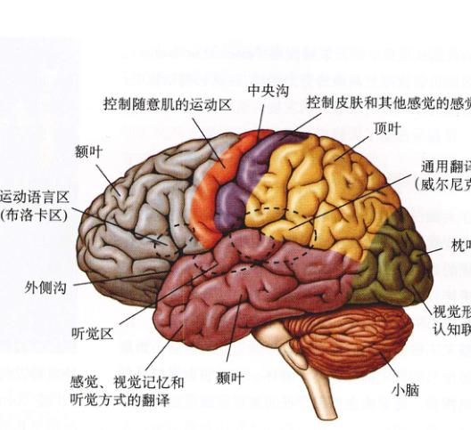
图 54.28 脑的各区 此图显示了一些已知的特化区。
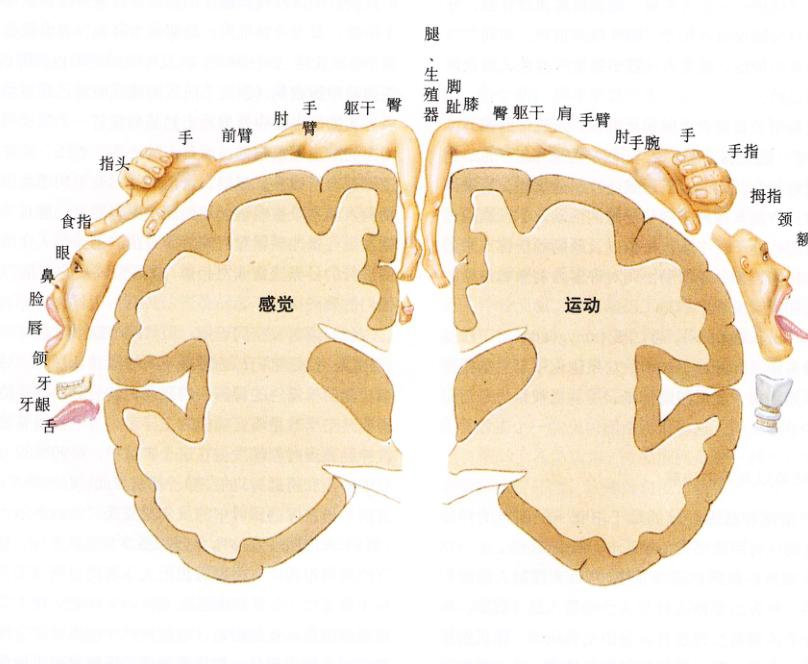
图 54.29 大脑皮层体表感觉区（左）和躯体运动区（右） 如这张模式图所示，大脑皮层的每个区分对应身体的一个不同部位。图中身体的面积和对应此处感觉或控制此处皮层的面积成比例。例如，手对应的感觉和运动控制区很大，而咽有很大的运动控制区和很小的感觉区。
Page 22 / 1056
2) 基底神经节
在大脑白质的深处理着一些细胞体和树突组成的群，这些就是灰质的产生地。这些由神经细胞的细胞体所组成的集团，被统称为基底神经节 (basal ganglia)。它们负责接收上行束所传来的感觉信息，以及大脑皮层和小脑所发出的运动指令。基底神经节所发出的信号，沿着脊髓向下传播，它们主要参与身体运动的控制。如果基底神经节中的部位受到了破坏，就可能会引起静息肌肉的颤抖，这是帕金森综合征的患者所表现出的症状之一。
3) 丘脑和下丘脑
丘脑是脑中感觉信息整合的主要场所。视觉信息、听觉信息以及体感信息都被传送丘脑中，在此处，感觉束则与联络神经元形成突触。感觉信息通过丘脑，分别继续传到大脑皮层的枕叶、颞叶以及顶叶。不同类型的感觉信息的传递，都是由丘脑中特定的神经元细胞体集合来完成的。
下丘脑则负责整合内脏的活动。它还能帮助调节体温、饥饿感、饱胀感、焦渴等，还能与边缘系统一起，调节多种情绪状态。此外，下丘脑还控制着垂体。垂体调节着身体内其他许多内分泌腺的分泌。下丘脑通过与大脑皮层和脑干（中脑、脑桥以及延髓的统称）中的控制中心相互连接，还帮助协调对许多内刺激和情绪的神经反应和激素反应。
海马 (hippocampus)、杏仁核 (amygdala) 与下丘脑组成边缘系统 (limbic system)，它是进化中与大脑相连的深层原始结构，负责控制情绪。海马也被认为是与记忆有关的重要结构，这将作为后面讨论的一个主题。
4) 语言以及其他功能
(1) 清醒和睡眠：脑的脑干中有一群散布的神经元，它们被称为网状结构 (reticular formation)。这一结构的一个部分叫做网状激活系统，它负责控制人的意识和警觉性。所有的感觉途径都会传输给入这个区域。接下米，这个区域就会处理进入脑的这些信息，并识别重要的刺激。当网状激活系统被刺激至清醒，它会增加大脑的许多部分的活动水平。从网状结构进入皮层和脑的其他区域的神经途径会被麻醉剂和巴比妥酸盐所抑制。
网状激活系统既控制睡眠状态，也控制清醒状态。呆在一间黑暗房间里的人比呆在一间明亮房间里的人更容易入睡。因为在黑暗的房间里，网状激活系统所接收到的使之兴奋的视觉刺激要少得多。此外，这个系统的活性还可以为一种神经递质—— 5-羟色胺的存在而降低。5-羟色胺可以使脑的活动能力下降，并由此使人入睡。
睡眠并不意味着丧失知觉。实际上，它是一个活跃的过程，而且还可以利用脑电图 (EEG) 记录下脑的电活动，从而了解人在睡眠过程中的各个不同阶段。一个闭着眼睛、放松但仍保持清醒的人，他的脑电图主要由大的慢波组成，其频率（一秒内的反复数）为 8~13 Hz。这些波被称为 α 波 (alpha wave)。在一个眼睛睁开并保持着警觉的人的脑电图中，则显示出了另一种更快的波—— β 波 (beta wave)，其频率为 13~30 Hz。此外，这种波形更具有辨别意义。因为在这个时期内，各种的感觉输入信号被脑接收、处理并产生运动活动。
θ 波 (theta wave) (4~7 Hz) 与 δ 波 (delta wave) (0.5~4Hz) 出现在睡眠过程的各个阶段中。在一个正在进入睡眠状态的人的脑电图中，最早发生的变化就是脑电波的放慢以及震动幅度的减小。这种慢波睡眠期有几个阶段，其主要特征为：清醒能力降低、骨骼肌运动下降、心率放慢、血压降低，以及呼吸的速率也会降低。在快速动眼睡眠期（因这个阶段的睡眠眼晴迅速运动而得名），人的脑电图中所显示的脑电波与一个放松但清醒的人的脑电图很相似。而且人的心率、血压、新陈代谢速率都有所回升。但是，奇怪的是，处于快速动眼睡眠期的人非常难被唤醒。他们通常更可能自己醒过来。梦就发生在快速动眼睡眠期。而眼睛的运动与人在清醒时所进行的目光追踪非常相似，就好像做梦的人在“观看”他们的梦一样。
(2) 语言及空间识别：虽然两个脑半球在结构上彼此相似，但是它们却有着不同的活动。目前，有关脑功能的单侧性的最深入的研究，就是对于语言功能的研究。左半球是语言功能的主导者，与语言相关的大多数神经处理过程都发生在这个半球中，对 90% 的习惯用右手的人和将近 2/3 的左撇子都是如此。在主导半球中，有两个语言区。顶叶中的威尔尼克区 (Wernicke's) 中枢 (图 54.28)，处于基本听觉区和基本视觉区之间。它对语言的理解过程，以及将思想汇入语音的过程 (图 54.30) 均十分重要。布罗卡皮层区 (Broca's area)，位于负责控制面部的运动皮层附近。它负责产生形成语言交流所必需的运动输出信号。如果脑的这些区域受到了损伤，将会引起语言的混乱即失语症 (aphasia)。比如说，如果一个人的威尔尼克中枢受到了损伤，他依然可以说得又流...
Page 23 / 1057
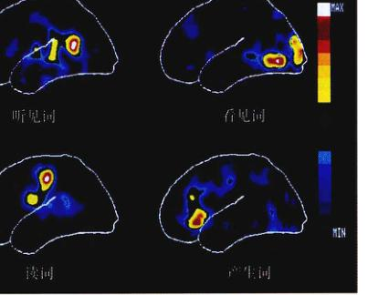
图 54.30 脑的不同区域控制不同的活动 这张插图说明人在听一个词，默读它，大声地重复读这个词，然后说一个与此相关的词时脑的反应。白区、红区和黄区活动最剧烈。比较图 54.28，可知脑的各区是如何被定位的。
利又迅速，但是却毫无意义，在他所说出的话中，一个个词语好像是一盘“语言色拉”，全搅和到了一起。
语言功能的主导半球擅长逻辑思维，比如产生一个句子。而非主导半球（在大多数人中为右半球）则擅长于形象思维。形象思维能力，在猜谜以及绘画中是必不可少的。同时，右半球还与音乐能力有着非常重要的关系——一个左半球的布罗卡皮层区受损的人可能无法说话，但是却具有唱歌的能力！如果非主导半球受到了损伤，可能会造成威觉辨别能力的丧失，也就是无法辨别一个人的音乐能力，如歌唱。更特殊的是，如果右半球的颞皮层受到了损伤，将会使人丧失辨认容貌的能力，而阅读、写作以及表达理解却都不会受到影响。因此，患这类残疾的患者，可以通过声音来辨别熟悉的人。非主导半球对于巩固与语言无关的经历的记忆也很重要。
(3) 学习与记忆：脑的最大谜题之一就是学习和记忆的基础。与任何一个记忆有关的信息似乎都不完全存在于脑的某个特定部分中。我们无法确定皮层上与特定记忆有关的位点。因为，对于皮层上相应部位的损伤无法选择性地抹去记忆。虽然，切除脑的某一部分尤其是颞叶，将引起记忆的丧失，但是这些记忆却不会全部丧失，很多记忆并不会因为损伤而由而消失，而且这些记忆将随着时间的推移而逐渐恢复。因此，很多试图探明记忆背后的生理机制的科学家感到，他们的成就在试图抓佳一团影子。虽然我们至今都还无法完全了解这些机制，但是，我们却已经掌握了有关记忆形成的基本过程的大量信息。
长期记忆与短期记忆似乎有着本质性的不同。短期记忆是转瞬即逝的，往往只会保持一小会儿。短期记忆可以通过施加电击而被立即抹去。但是，先前存在的长期记忆却完整无缺。这一结果表明，短期记忆是以电的方式通过一个短暂的神经兴奋储存的。与此相反，长期记忆则似乎与脑内某些特定的神经连接结构的改变有关。颞叶的两个部分——海马和杏仁核，都是既与短期记忆有关又与长期记忆的巩固有关。如果这些结构受到了损伤，人就会丧失将新发生的事件储存入长期记忆的能力。
在一个较短时期内，突触被使用的强度较大的话，通常会使随后的传递更有效。这一现象被称为突触传递的长时程增强 (long-term potentiation, LTP)。在突触传递的长时程增强期间，突触前神经元可能会伴随着每个动作电位释放出更多的神经递质。而突触后神经元，则变得对这种神经递质更敏感。据报道，突触传递的这些变化可能与记忆储存的某些方面有关。
5) 进行性老年痴呆 (阿尔茨海默症) 的机制依然是一个不解之谜
过去，我们对阿尔茨海默症 (Alzheimer's disease) 几乎一无所知。患这种病的人会丧失记忆以及思考的能力。各个药厂都想研制出治疗进行性老年痴呆的产品，但是，它们却缺乏有关的具体信息。科学家们仍未确定引起该病的生物学实质以及它的起因达成共识。目前，已提出了两种假说：一种假说认为，脑中的神经细胞被自外而内地方死；而另一种假说则认为脑内的神经细胞被自内而外地杀死。
在第一个假说中，一种叫做 β - 淀粉肽的外在蛋白杀死了神经细胞。蛋白质加工过程中的一个错误使这个小肽的构象异常。它们将聚集集团，或形成斑点。这些斑点逐渐填充入脑中，损伤并杀死神经细胞。然而，在那些未患进行性老年痴呆的人的尸体中也发现了这种淀粉状蛋白。
第二个假说认为，神经细胞是被一种形式异常的内在蛋白质所杀死的。这种蛋白质被命名为 τ。其正常功能是保持蛋白质在微管中的运输。异常的 τ 汇集成螺旋状的片段，会对神经细胞的正常功能造成影响。研究者将继续观察，以确认这些团块以及斑点是否是进行性老年痴呆的成因，或者是否会对这种疾病造成影响。
目前，已取得了以下研究进展：① 确认那些会增加患进行性老年痴呆可能性的基因；② 一旦发生变异，就会诱导产生进行性老年痴呆的基因。然而，这些基因不会揭示有关进行性老年痴呆的太多信息。因为，在大多数的进行性老年痴呆患者中都不存在这些基因。而且，它们所引发的症状比大多数进行性老年痴呆患者表现相应症状的出现时间要早得多。
Page 24 / 1058
大脑由两个脑半球组成。每个脑半球由灰质和白质组成。灰质组成大脑皮层，覆盖在白质外面；白质形成灰质的司令部，即基底神经节。这些区域与感觉信息的整合、身体运动的控制，以及一些联络功能，如学习和记忆有关。
54.4.3 脊髓
脊髓是一条由神经元组成的电缆。它从脑发出，并沿着脊椎向下延伸 (图 54.31)。脊髓被脊柱以及一层层的脑膜 (meninges) 所保护。当然，脑膜也覆盖在脑的外部。脊髓的内部为两个区域：靠内的区域叫做灰质，由中间神经元和运动神经元的细胞体组成；靠外的部分叫做白质，由神经细胞的轴突和树突组成。脊髓就像人体内的“信息高速公路”。由身体和脑所发出的信息，就沿着脊髓向上、向下传输。
除了传递信息，脊髓也与反射作用有关。反射作用是突然而非自觉性的肌肉运动。感觉神经元将它所感受，到的信息，传递给脊髓中的一个运动神经元，而反射作用就会对这个刺激作出一个迅速的运动反馈。这个过程不需要更高级的处理。我们最常用的反射作用之一就是眨眼睛。这种反射作用可以保护我们的眼晴。如果某种物体，如一只小虫或一阵灰尘接近了你的眼晴，那么，在你意识到所发生的事情之前，你的眼皮就会眨动。这个反射在大脑意识到眼睛受到侵犯之前就已经发生了。
由于这个过程仅需要通过几个神经元来传递信息，反射发生得非常迅速。很多反射从不都会到达脑。神经冲动仅传送到脊髓中，接着就以运动响应的形式直接传送回效应器。一些反射，如膝跳反射 (图 54.32) 是单突触反射弧。在这些反射中，感觉神经细胞通过突触与脊髓中的一个运动神经元直接相连，而这个运动神经元的轴突直接连接肌肉。膝跳反射也是一种单一肌肉牵张反射 (muscle stretch reflex)。用一个橡胶锤敲击髌韧带时，肌肉就被拉紧，同时，肌梭 (muscle spindle apparatus) 也会被拉紧。和肌梭外的神经纤维一样，肌梭也在肌肉里，它随着肌肉的拉伸而拉伸。肌梭的拉伸将激活那些通过突触与脊髓内的运动神经元直接相连的感觉神经元。这样，体运动神经元将动作电位传送到骨骼肌的肌纤维，并促使肌肉收缩。这是脊椎动物体内最简单的反射。因为，在反射弧中只包含了一个突触。
脊椎动物体内的多数反射，都包含有一个起连接作用的中间神经元。它位于感觉神经元和运动神经元之间。从热炉子上收回手，以及因一阵风而眨眼晴，都需要将信息从一个感觉神经元通过一个或多个中间神经元，传递到一个运动神经元。接着，这个运动神经元就会激发某一块肌肉的收缩 (图 54.33)。
脊髓的再生
过去，科学家们曾尝试将身体其他部分的神经植入完全断开的脊髓，以此来形成伤口两端的桥梁，并引导脊髓的再生。但是，这类实验大多都以失败告终。因为，虽然通过这些移植进的神经可能会使突触再生。但是，一旦这些轴突离开了移植的那些神经，它们就无法穿过脊髓继续。此外，还存在另外一种抑制脊髓内神经生长的因素。在发现成纤维细胞生长因子能够刺激神经的生长之后，神经生物学家们就开始尝试，利用混有成纤维细胞生长因子的神经纤维，来填实所移植进入的神经和脊髓内的神经的黏合。3 个月以后，利用这种技术进行搭桥的白鼠的后足开始表现出运动能力。在对实验动物所进行的进一步分析中，染色实验表明，在伤口的两侧都有脊髓神经再生。很多科学家因此备受鼓舞，并希望利用一种类似的治疗方法，来治疗人类的此类疾病。但是，在人类多数的脊髓损伤病人并不是单一的脊髓严重受损，通常还会发生神经断裂，从而造成了不同组织的损伤。此外，虽然那些白鼠重新获得了一定的运动能力，但是实验表明，它们几乎无法行走或站立。
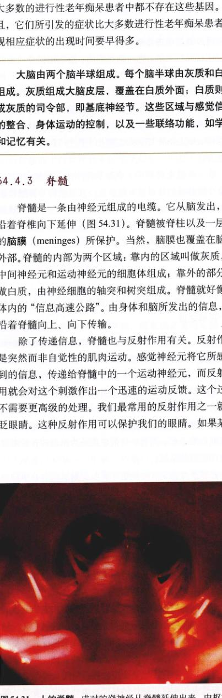
图 54.31 人的脊髓 成对的脊神经从脊髓延伸出来。中枢神经系统正是通过这些脊神经以及从脑发出的脑神经与身体的其他部分联系。
Page 25 / 1059
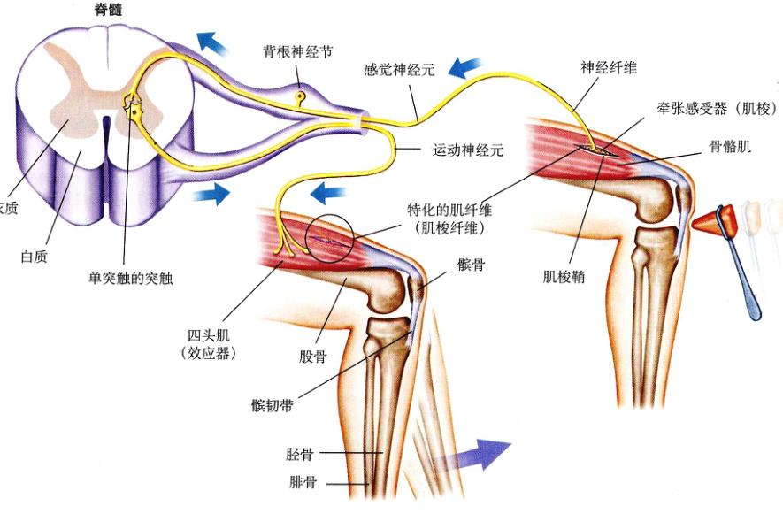
图 54.32 膝跳反射 这是最简单的反射，仅包含感觉神经元和运动神经元。
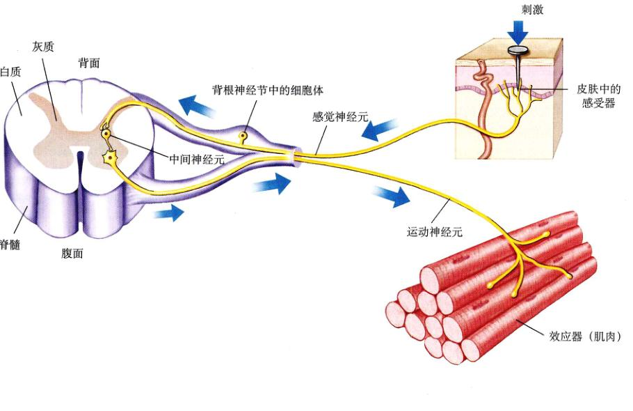
图 54.33 皮肤脊反射 这个反射包括的神经元多于膝跳反射，除运动神经元和感觉神经元外，还有中间神经元。
Page 26 / 1060
脊髓将信息传递到脑，并传输脑所发出的信息，同时还可以直接处理一些感觉信息。
54.5 外周神经系统由感觉神经元和运动神经元组成
54.5.1 外周神经系统的组成
外周神经系统由神经和神经节组成。神经的结构类似于由轴突组成的“电缆” (图 54.34)。一般说来，既有感觉神经元，又有运动神经元。神经节则是由中枢神经系统之外的神经细胞的细胞体聚集而成的。
脊神经在起始处分为感觉部分和运动部分。感觉神经元的轴突进入到脊髓的背面，并形成了脊神经的背根 (dorsal root)。运动神经元从脊髓的腹面出发，形成了脊神经的腹根 (ventral root)。感觉神经元的细胞体，在脊髓的外部聚集到背根神经节 (dorsal root ganglia) 中。躯体运动神经元的细胞体则位于脊髓内，而不存在于神经节中。
躯体运动神经元负责激发骨骼肌的收缩，而自主运动神经元则刺激非自主效应器——平滑肌、心肌以及腺体。在表 54.4 中，我们对躯体神经系统以及自主神经系统进行了对比。在后面的内容中，我们将逐一讨论这两类神经系统。躯体运动神经元刺激体内骨骼肌的收缩。响应有意识的控制命令，也可能是某个不需要有意识的控制就能完成反射的一部分。对骨骼肌的有意识控制是通过激活一束束从大脑发出的神经来实现的。对应不同肌肉的轴突，则指向不同水平的脊髓。有些下行的轴突可以直接刺激脊髓中的运动神经元。另一些下行的轴突则是先激活中间神经元，然后，这些中间神经元进一步向脊髓中的运动神经元发出刺激。当一块特定的肌肉受到刺激并收缩时，它的拮抗者却必须被抑制。比如说，为了放松手臂，舒张肌必须被激活，而它的拮抗者——收缩肌却必须被抑制（图 50.6）。下行的运动轴突，通过引起控制拮抗肌的脊运动神经元的超极化，从而产生必要的抑制。
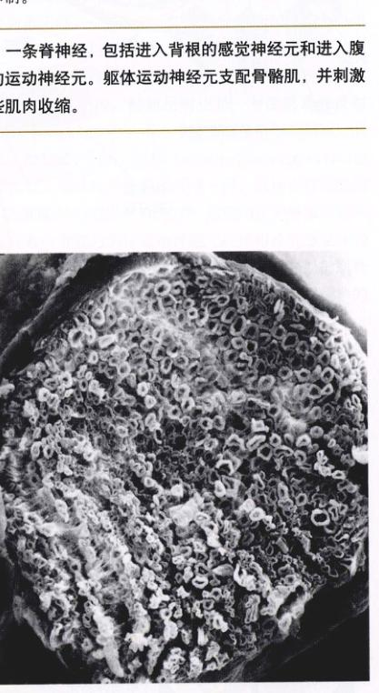
图 54.34 外周神经系统中的神经 一根牛蛙神经的横截面图 (1600 ×)。这根神经是由结缔组织包裹的一束轴突。许多有髓鞘的轴突清晰可见，有点像油炸圈饼。
表 54.4 躯体神经系统与自主神经系统之比较
| 特 征 |
躯体神经系统 |
自主神经系统 |
| 效应器 |
骨骼肌 |
心肌、平滑肌、胃肠道、血管、呼吸道、内分泌腺 |
| 产生在运动神经上的效果 |
兴奋 |
兴奋或抑制 |
| 对效应器细胞的神经支配 |
总是单一的 |
通常是双重的 |
| 达到效应器所需经过的神经元数 |
一个 |
两个 |
| 神经递质 |
乙酰胆碱 |
乙酰胆碱、去甲肾上腺素 |
Page 27 / 1061
54.5.2 自主神经系统
自主神经系统由交感神经系统 (sympathetic division)、副交感神经系统 (parasympathetic division) 以及后脑中的延髓组成。其中，延髓负责协调整个系统。虽然交感神经与副交感神经各不相同，但是，它们也有一也些共同特征。在将冲动传出运动途径都包括两个神经元：第一个神经元的胞体位于中枢神经系统中，并伸出一条指向某个自主神经节的轴突。第二个神经元的胞体位于自主神经节中，其轴突与某块平滑肌、心肌或某个腺体细胞形成一个突触 (图 54.35)。第一个神经元叫节前神经元 (preganglionic neuron)，它总是在突触处释放乙酰胆碱 (ACh)。第二个神经元叫节后神经元 (postganglionic neuron)。副交感神经中的节后神经元释放乙酰胆碱，而交感神经中的节后神经元则释放去甲肾上腺素。
在交感神经系统中，节前神经元始于脊髓的胸部和腰部 (图 54.36)。这些神经元的突触所发出的大部分轴突，在脊髓外立即形成两条平行的神经链。这些结构，通...
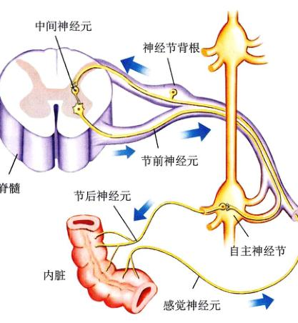
图 54.35 一个自主反射 在这个传出途径中有两个运动神经元。一个是 CNS 中的节前神经元，与一个自主神经节形成突触。二是节后神经元，位于神经节中，控制内脏效应器 (平滑肌、心肌、腺体)。
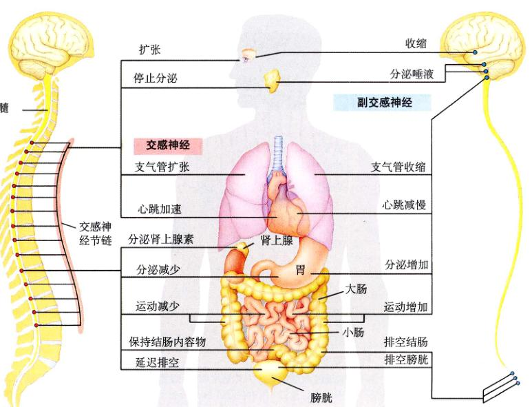
图 54.36 自主神经系统分为交感神经和副交感神经 交感神经的节前神经元位于脊髓的胸段和腰段，副交感神经的节前神经元位于脑和脊髓的骶部。交感神经的神经节位于脊髓附近，副交感神经的神经节位于其所支配的器官附近。大部分的内脏器官同时受到交感和副交感神经的控制。
Page 28 / 1062
常被称作交感神经链 (sympathetic chain)。交感神经链包括节后神经元的细胞体，同时，这些神经元所发出的轴突支配各个内脏器官。然而，在这种基本模式之外，还有其他的一些情形。最重要是，有些节前神经元的轴突，并不是通过突触离开交感神经链，而是直接终止于肾上腺内。肾上腺位于外部和内部，外部叫做皮质，内部叫做髓质。肾上腺髓质接收交感神经发出的神经控制信号，并分泌肾上腺素。
当交感神经系统兴奋时，肾上腺素以激素分泌的形式释放进入血液。同时，在节后神经元的突触处，则释放去甲肾上腺素。肾上腺素和去甲肾上腺素共同作用，使机体做好打斗或逃跑的准备 (图 54.37)。在这种情况下，心跳加速并变得更加有力，血液中的葡萄糖浓度也会升高，血液流向心脏和肌肉。同时，肺部的细支气管也会舒张 (表 54.5)。
以上这些反应同时受到副交感神经系统的拮抗。节前副交感神经元始...
于脑和脊髓的骶区，由于起源位置的关系，副交感神经节无法形成与交感神经链类似的副交感神经链。很多副交感神经的轴突都是沿着迷走神经（第十条脑神经）延伸，而终止于内脏器官附近，甚至是在内脏器官的神节中。副交感神经元在突触处释放乙酰胆碱来调控内脏器官。副交感神经的作用包括：降低心率、增强分泌、激活消化器官等。
图 54.37 运动时的交感神经系统功能 为使身体做好打斗或逃跑的准备，交感神经兴奋，使多器官、腺体、身体作用发生变化。
表 54.5 对靶组织的自主神经支配
| 靶 组 织 |
交感神经刺激 |
副交感神经刺激 |
| 瞳孔 |
放大 |
收缩 |
| 腺体 |
|
|
| 唾液腺 |
血管收缩、分泌减少 |
血管舒张、分泌增多 |
| 胃腺 |
抑制分泌 |
激发胃的活动 |
| 肝脏 |
刺激葡萄糖的分泌 |
抑制葡萄糖的分泌 |
| 汗腺 |
出汗 |
无 |
| 胃肠道 |
|
|
| 括约肌 |
张力增加 |
张力减少 |
| 壁 |
张力减少 |
增强运动力 |
| 胆囊 |
放松 |
收缩 |
| 膀胱 |
|
|
| 肌肉 |
舒张 |
收缩 |
| 括约肌 |
收缩 |
舒张 |
| 心肌 |
增加心率以及力量 |
降低心率 |
| 肺 |
肺部支气管舒张 |
肺部支气管收缩 |
| 血管 |
|
|
| 肌肉内血管 |
舒张 |
无 |
| 皮肤内血管 |
收缩 |
无 |
| 内脏内血管 |
收缩 |
舒张 |
Page 29 / 1063
G 蛋白介导细胞对自主神经的反应
你可能会感到很奇怪，为什么乙酰胆碱在心脏中产生抑制性的效果，降低心率，而在另外的地方却会产生兴奋性的效果。乙酰胆碱能够抑制心脏的起搏细胞，是因为乙酰胆碱会使钾离子通道打开，从而引发钾离子的外流，并导致细胞膜的超极化。这种效果以及其他一些副交感神经的效果都是由乙酰胆碱间接引起的。而一类叫做 G 蛋白 (G protein)（由于这些蛋白受二磷酸鸟苷 (GDP) 和三磷酸鸟苷 (GTP) 的调控而得名）的膜蛋白介导了三者过程。因为 G 蛋白与乙酰胆碱的受体蛋白之间存在一些距离，因此细胞需要 G 蛋白来充当介中。
G 蛋白有三个亚基，分别记作 α、β 和 γ。它们连接在一起，并进一步与乙酰胆碱的受体蛋白结合。当副交感神经末梢释放的乙酰胆碱与其受体蛋白结合后，G 蛋白的亚基就会分开 (图 54.38)。G 蛋白的特定成分在细胞膜内移动到钾离子通道处，引起通道的打开，这就产生了超极化，从而使心率减慢。在其他器官中，G 蛋白有不同的效用，并会引起兴奋性反应。例如，控制胃的副交感神经，可以使胃液分泌增加，并加剧胃的收缩。
交感神经的作用同样涉及 G 蛋白的活动。交感神经末梢释放去甲肾上腺素，以及肾上腺髓质释放肾上腺素，都需要 G 蛋白来激活靶细胞而产生兴奋。我们将在第56章中，与激素作用一起详细讨论这一过程。
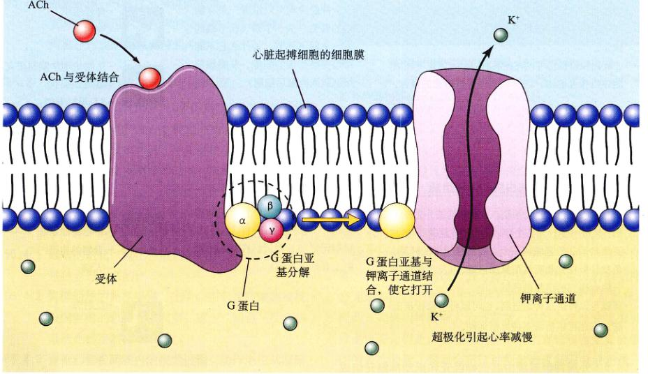
图 54.38 ACh 的副交感作用需要 G 蛋白的活动 ACh 和受体结合导致 G 蛋白复合体的分解，释放出的一组组分在细胞膜内移动，与形成离子通道的蛋白质结合。这里出示的例子是 ACh 对心脏的作用，G 蛋白引超钾离子通道的开放，钾离子外流，引起超极化，心率减慢。
(叶欣 葛月宾 闫振广 张荣庆 译校)
Page 30 / 1064
小 结
54.1 神经系统由神经元和支持细胞组成
- 神经系统分为中枢神经系统 (CNS) 以及外周神经系统 (PNS)。
- 1. 三类神经元的相同点和不同点各是什么？
54.2 神经冲动由轴突的细胞膜产生
- 处于静息状态的轴突，其膜电位大约是 -70 mV；该电位值主要是由于钾离子的分布引起的。
- 一个去极化的刺激，首先使电压门控钠离子通道打开，接着又引起钾离子通道的打开，产生动作电位最初的上升部分，然后，产生动作电位中的复极化部分。
- 动作电位是全或无的，而且它们的幅度不会变化。因为，动作电位都沿着轴突，激发下一个动作电位。
- 2. 哪种阳离子在细胞内的浓度最高？哪种阳离子在细胞外液中的含量最高？细胞是如何保持这种浓度差异的？
- 3. 什么是电压门控离子通道？
- 4. 动作电位在传播过程中，幅度有什么变化？
54.3 神经元与其他细胞间的连接叫做突触
- 突触前轴突释放神经递质。这些神经递质扩散穿过突触间隙，并在突触后膜上引起去极化或超极化。
- 去极化和超极化可以在突触后神经元的树突和细胞体内相互叠加。这样就实现了对信息的整合。
- 5. 一个神经冲动可以沿着一条有髓鞘的轴突，从一个朗飞氏节跳到另一个朗飞氏节。为什么它不能跨过突触的间隙，从突触前细胞跳到突触后细胞？
54.4 中枢神经系统由脑和脊髓组成
- 脊椎动物的脑，分为前脑、中脑和后脑。这些结构，又进一步分为各个脑区。大脑皮层有一个主要负责运动的区域和一个主要负责感觉的区域，负责分析视觉和听觉信息的区域，以及负责整合并综合到的信息的区域。
- 脊髓可以信息传送进脑，也可以将信息传出脑，它还可以协调多种反射运动。
- 6. 基底神经节位于何处？它们的功有什么？
- 7. 短期记忆和长期记忆在基本的机制上有什么不同？
54.5 外周神经系统由感觉神经元和运动神经元组成
- 交感神经分支在应急反应中被激活。在大多数的活动中，副交感神经分支都会对交感神经分支的活动产生拮抗作用。
- 8. 交感神经分支与副交感神经分支的神经节的位置有何不同？
媒体资源
- 技能测验：髓鞘的形成
- 膜电位
- 动作电位
- 动作电位
- 技能测验：钠-钾泵
- 静息膜电位
- 跳跃传导
- 神经组织
- 突触
- 生物伦理学案例研究：禁烟
- “科学”专栏：吸烟会使人上瘾吗？
- 2000 年诺贝尔奖
- 实践活动
- 中枢神经系统
- 脊髓的构造
- 人脑
- 反射弧
- 实践活动：外周神经系统